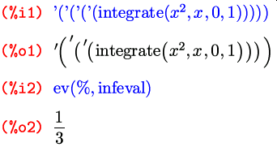

Впервые было опубликовано в «Linux Format» №8 (82), август 2006 г.
Продолжаю знакомить вас с возможностями свободной программы символьных вычислений Maxima. Начну в этот раз с краткого рассказа об основных операторах Maxima и некоторых их свойствах.
На самом деле в Максиме нет четкого разграничения между операторами и функциями. Более того, каждый оператор — это на самом деле функция:

Здесь имена функций-операторов берутся в кавычки лишь потому, что содержат символы, нестандартные для имен функций. Это похоже на работу в командной оболочке UNIX, где, если в имя файла входят управляющие символы, вы можете либо взять это имя в кавычки, либо экранировать каждый такой символ обратным слэшем. В Maxima допустимы те же два варианта: например, вместо "+" можно было бы написать \+.
Итак, все встроенные операторы максимы являются функциями; более того, вы можете наделить любую (в том числе свою собственную) функцию определенными свойствами, которые фактически превратят ее в оператор. Подробнее об этом я расскажу в следующих выпусках.
Таким образом, разделение на функции и операторы в Maxima достаточно условно. Посему в этом разделе речь пойдет не только о некоторых операторах, но и о нескольких функциях, которые по природе своих действий сходны с операторами. Наиболее привычные операторы уже упоминались в предыдущей статье: +, –, *, /, ^ или ** (возведение в степень) и функцию sqrt(x) (квадратный корень). Сегодня мы поговорим еще о нескольких достаточно распространенных.
Точкой обозначается матричное произведение. В документации утверждается, что сама точка при этом должна быть отделена пробелами от обоих своих операндов — дабы не спутать ее с точкой десятичной. На самом деле мне не удалось добиться от Максимы неадекватной реакции и в «беспробельном» варианте; что и логично, так как все равно эти две разные ипостаси точки можно различить по контексту: ведь цифры именами матриц быть не могут. Так что, думаю, можете смело писать и без пробелов.
В случае, если заданные матрицы не могут быть перемножены из-за несовпадающих размерностей, Maxima выдаст сообщение об ошибке:
Восклицательный знак, стоящий после своего аргумента (т. е. постфиксный оператор), традиционно обозначает факториал. Не менее традиционно, двумя восклицательными знаками обозначен полуфакториал [произведение всех четных (для четного операнда) или нечетных чисел, меньших либо равных данному, — прим. ред.]. Функции abs(x) и signum(x) возвращают, как опять же нетрудно догадаться, модуль и знак числа. А функции max(x1,...,xn) и min(x1,...,xn) — соответственно максимальное и минимальное из заданных чисел.
Тут стоит остановиться на нескольких моментах. Во-первых, все функции и операторы Maxima работают не только с действительными, но и комплексными числами. Сами комплексные числа записываются в Максиме в алгебраической форме, с мнимой единицей, обозначенной через %i; то есть в виде a+b*%i, где a и b — соответственно действительная и мнимая части числа.
Так, факториал задан в наиболее общем виде и представляет собой, по сути, гамма-функцию (точнее, x! = gamma(x+1)), то есть определен на множестве всех комплексных чисел, кроме отрицательных целых. При этом факториал от натурального числа (и нуля) автоматически упрощается до натурального же числа:
Точно так же и модуль определен для всех комплексных чисел (напомню, что |a+b*i|=sqrt(a2+b2)). Минимум, максимум и знак определены, естественным образом, только для действительных чисел, так как комплексные числа общего вида, как известно, между собой несравнимы.
Второй важный момент: когда некоторая встроенная функция или оператор Maxima не может получить для переданного выражения однозначный результат (ввиду недостаточности данных) — она пытается максимально упростить это выражение. (Для некоторых функций такое автоупрощение регулируется специальными параметрами.) Например, если x не задан:

Подобные упрощения, равно как и «раскрытие» факториалов и арифметических операторов, не считаются вычислениями, а следовательно оператор блокировки вычислений их не предотвращает:
Как вы, вероятно, помните, в прошлый раз кроме упомянутого только что оператора блокировки вычислений мы познакомились с оператором присвоения значений, или, иначе, именования выражений, : . В Maxima существуют и другие операторы именования, из которых нам на данный момент интересен один — оператор задания функции. Обозначается он через :=, и аналогии здесь прослеживаются не с языками Pascal или Algol, как может показаться на первый взгляд, а с другими обозначениями самой Максимы: с одной стороны определение функции можно воспринимать как уравнение (которое обозначается знаком =), а с другой — оно родственно назначению имени некоторому выражению (то есть :). То есть определение функции можно в какой-то мере считать симбиозом этих двух выражений — и оттого вполне логично, что оно обозначается обоими их символами. (В продолжение этой аналогии могу добавить, что в Maxima есть и расширенные варианты операторов присвоения и назначения функции, обозначаемые соответственно через :: и ::=.)

Думаю, основы работы с функциями самоочевидны по аналогии с приведенным примером, а подробнее об этом мы поговорим в следующих выпусках.
Первое слово — про апостроф, который используется в Maxima для блокировки вычислений. В математическом режиме привычной клавишей вводится несколько другой «апостроф», обозначающий производную. Поэтому для ввода апострофа, блокирующего вычисления, нужно внутри математического режима ввода создать поле текстового ввода — и уже в нем ввести обычный текстовый апостроф. По умолчанию это делается комбинацией клавиш A-$, что в зависимости от настроек TeXmacs может расшифровываться как Alt+Shift+4 или Win+Shift+4. После ввода апострофа можно с помощью стрелки влево выйти из поля текстового ввода и продолжать пользоваться всеми прелестями ввода математического.
И второе слово — насчет ввода различных символов, к которым в математическом режиме либо в самом TeXmacs привязаны некоторые клавиатурные сокращения, т. е. при простом нажатии на клавишу обычные символы не вводятся, а вместо этого происходит некое другое привязанное к этой клавише действие. Среди таких переназначенных символов, к примеру, $ и \. Для того, чтобы отменить специальное действие и вместо него просто ввести обозначенный на клавише символ, нужно непосредственно перед этой клавишей нажать Shift+F5.
То же самое можно сказать и про кавычку, к которой уже глобально в TeXmacs привязан по умолчанию ввод «фигурных» кавычек. Здесь есть два варианта: либо предварить ввод кавычки нажатием той же самой комбинации Shift+F5; либо поменять умолчательное поведение редактора с помощью пункта меню Редактировать → Предпочтения → Клавиатура → Автоматические кавычки → Никаких — правда, тогда перед вводом кавычки придется, так же как и для апострофа, переходить внутри математического режима в текстовый.
А сейчас я расскажу о том, что было обещано в прошлый раз: о возможностях управлять процессом вычислений вводимых вами выражений. В прошлый раз, о чем я уже вспоминал, было упомянуто только одно такое средство — блокировка вычислений. Здесь все достаточно просто и дополнительно стоит остановиться только на одном моменте. Если апострофом предварен вызов функции (встроенной ли, пользовательской — несущественно), то блокируется вычисление самой функции, но не ее аргументов. Если же поставить апостроф перед выражением, заключенным в скобки, то невычисленными останется все это выражение целиком, т. е. и все входящие в него функции, и все аргументы этих функций. Например:

В противовес блокировке вычислений, можно также принудительно вычислить любое выражение — для этого тоже существует оператор, состоящий из двух апострофов:

В терминологии Maxima невычисленная форма выражения называется «noun form», вычисленная — «verb form». Сохраняя лингвистические параллели, на русский я бы это перевел как «несовершённая форма» и «совершённая форма».
Если говорить о ячейках ввода-вывода, то значение ячейки ввода в Maxima закономерно сохраняется до его вычисления (т. е. в несовершённой форме), а значение ячейки вывода — после (т. е. в совершённой); другими словами, тут сохраняется естественный порядок «ввод → вычисление → вывод».

Как видите, операторы вычисления и блокировки вычислений имеют накопительный эффект. О другой стороне этого эффекта мы поговорим чуть ниже.
Оператор, обозначенный двумя апострофами, является синонимом к функции ev(выражение). Сама функция ev предоставляет гораздо более широкие возможности, нежели простое принудительное вычисление заданного выражения: она может принимать произвольное число аргументов, первый из которых — вычисляемое выражение, а остальные специальные опции, которые как раз и влияют на то, как именно будет производиться вычисление. Точно так же, как двойной апостроф — сокращение для ev без дополнительных опций, есть еще более упрощенная запись функции ev с опциями: в этом случае вместо имени функции и скобок вообще ничего писать не нужно; т. е. «ev(выражение, опц1, опц2, …)» можно записать просто как « выражение, опц1, опц2, …»
Первая из таких опций связана с автоупрощением. Глобально автоупрощение регулируется переключателем simp (от «simplification» — упрощение), и по умолчанию оно включено; в любой момент его можно выключить, установив значение переключателя в false. Опция функции ev, одноименная этому переключателю, позволяет включить упрощение для данного конкретного вычисления — вне зависимости от того, включено или выключено оно глобально:

Тут нужно отметить еще, что вызов kill(all) не восстанавливает умолчательные значения переключателей; т. е. если мы, к примеру, изменили значение переключателя simp, как в примере выше, то для того, чтобы вернуться к изначальному порядку вещей, установленному сразу после запуска Maxima, нам нужно не только сделать kill(all), но и вручную назначить simp:true.
Опция diff принудительно раскрывает все производные и полные дифференциалы; а опция derivlist(x, y, …, v) — производные относительно переменных, заданных в качестве ее аргументов, а также полные дифференциалы (так как они не зависят ни от каких переменных):
Как видите, если из нескольких переменных из diff в derivlist() заданы не все, то раскрывается производная только по заданным переменным; это и понятно, так как выражения diff(f, x, 1, y, 1), diff(diff(f, x), y) и diff(diff(f, y), x) математически эквивалентны [по крайней мере, для «хороших» функций, — прим.ред]. Если же аргумент опции derivlist() вообще не является переменной дифференцирования, он просто игнорируется.
Опция nouns раскрывает вообще все несовершённые формы — и производные в том числе:

Опция float преобразовывает все рациональные числа в конечную десятичную запись; опция numer включает опцию float и, кроме того, приводит к десятичному виду многие математические функции от числовых аргументов:

Опция noeval блокирует сам этап вычисления как таковой; т. е. ее можно использовать для того, чтобы применить к выражению другие опции функции ev, не перевычисляя его. При этом опять-таки нужно понимать разницу между вычислением и упрощением:

Таким образом, мы можем принудительно упростить выражение, не перевычисляя его.
Опция eval — напротив, проводит дополнительно еще один процесс вычисления. Здесь стоит поговорить подробнее о накопительном эффекте вычисления, который я уже демонстрировал выше. Так как в Максиме значениями символов могут выступать самые разнообразные выражения, то в эти выражения тоже могут входить некоторые символы, которые тоже могут иметь свои значения; и такая цепочка «вложенных значений» может продолжаться сколь угодно глубоко. Один вызов функции ev (без опции eval) опускается по этой цепочке в глубину на один уровень:

Напомню, что здесь ev(y), eval является сокращенной записью от ev(ev(y), eval), таким образом вычисление в этом выражении проводится трижды. Кроме того, хочу обратить ваше внимание на порядок назначения выражений символам; здесь существенно, что на момент задания каждого выражения входящий в него символ еще не был определен — иначе в выражение автоматически подставлялся не сам символ, а его значение. Таким образом, если бы мы произвели эти же назначения в обратном порядке, то значением символа y стало бы xm+6 — безо всяких принудительных вычислений.
В продолжение разговора о накопительном эффекте и «цепочных» вычислениях придется кстати переключатель infeval. Он заставляет ev перевычислять выражение до тех пор, пока оно не перестанет изменяться при последующих вычислениях. В частности, этот переключатель можно использовать и для того, чтобы разблокировать блокировку вычислений любой глубины вложения:

В других ситуациях использовать этот переключатель следует с осторожностью: не забывайте, что он может привести к зацикливанию.
О других константных опциях и переключателях функции ev можно узнать из ? ev и ? evflag, а мы наверняка еще рассмотрим многие из них позже, когда они будут более актуальны в контексте повествования.
Кроме константных значений есть еще несколько видов опций. Первый из них — это имена специальных функций, которые занимаются упрощением или преобразованием математических выражений. Будучи упомянута по имени в качестве опции, такая функция просто применяется к вычисляемому выражению. Например, выражение, fullratsimp — это то же самое, что и fullratsimp(ev(выражение)). Полный список таких функций вы можете найти в ? evfun.
Если в качестве опции ввести имя любой другой функции, не имеющей свойства evfun, то все несовершённые вхождения этой функции будут заменены совершёнными, т. е. принудительно вычислены.
Также в качестве опции можно задать назначение символа или функции; все такие назначения действуют локально в пределах вычисляемого выражения, и все подстановки производятся параллельно:
Опция подстановки символа допустима не только в виде оператора присвоения, но и в виде равенства; сделано это, в частности, для того, чтобы в качестве подстановок можно было использовать решения, найденные функцией solve:
Вот и все на сегодня. В следующий раз мы начнем с уже упомянутых вскользь функций по упрощению и преобразованию выражений.
Кроме двух описанных в прошлый раз интерфейсов к Максиме — wxMaxima и TeXmacs, — есть, как уже говорилось, и другие варианты, о которых я сейчас и расскажу.
Начнем с консольного интерфейса, доступного по команде Maxima; он выполнен в традиционном стиле командной строки: на экране чередуются вводимые вами команды и ответы системы на них. Интерфейс, как видите, достаточно незамысловат, но тем не менее все формулы, даже достаточно сложные, вполне читабельны. Графические возможности в чистой консоли недоступны совсем: графики функций, к примеру, могут быть изображены только всё теми же текстовыми символами. Если же запустить консольную Максиму в X-терминале, то графики могут отображаться в отдельных окнах — так же, как и в любом из графических интерфейсов. Единственный реальный плюс консольного интерфейса — это минимальные требования к ресурсам. В остальном всё, как видите, довольно аскетично.
Самый примитивный из графических интерфейсов, — XMaxima. На иллюстрации верхняя половина окна — это собственно рабочая область, нижняя — помощь.

Кроме этого отдельного окна помощи XMaxima практически ничем не отличается от консольного собрата, если тот запущен в X. Посему и тут долго задерживаться не будем. А рассмотрим следующий интерфейс — Maxima-Emacs. Он, как нетрудно догадаться, запускает сессию Максимы в буфере широко известного редактора Emacs. В результате вызова в редакторе команды Maxima (M-x Maxima) создается новый буфер по имени *Maxima*, в котором и запускается сессия. После этого становятся доступными довольно многочисленные команды взаимодействия с Maxima. Привязав эти команды к клавишам на свой вкус, приверженцы этого мега-редактора смогут получить внутри него довольно-таки удобный и богатый возможностями интерфейс (надо сказать, многие команды привязаны к определенным клавишам сразу, но не факт, что умолчательная привязка всем понравится, тем более, что речь о таких любителях настройки всего и вся под свой комфорт, как пользователи Emacs). К примеру, на клавишу Tab, которая в режиме Maxima не задействована, можно повесить команду Maxima-complete — и получить на привычном месте полноценное автодополнение (по умолчанию эта команда подвешена на M-Tab (Alt-Tab), что многим может быть неудобно, так как эта комбинация, как известно, часто бывает назначена на переключение между окнами). Правда, этот интерфейс также лишен графической отрисовки формул, но все графические возможности самой Maxima в нем, в случае запуска в X-версии редактора, естественно, доступны. Кроме того, интересен он не столько сам по себе, сколько во взаимодействии еще с одним интерфейсом, о котором чуть ниже.

Следующие два интерфейса — EMaxima и iMaxima — также являются режимами редактора Emacs. Первый — скорее не самостоятельный режим, а надстройка над режимом LaTeX, которая наверняка понравится тем, кто использует Emacs для редактирования LaTeX-документов. В отличие от режима Maxima, который предназначен для обычного изолированного запуска полноценной Maxima-сессии, здесь речь идет о возможности вставлять отдельные команды Maxima и, естественно, результаты их вычислений, прямо в редактируемый LaTeX документ. Для работы этого режима понадобится также расширение tex-site; для Emacs оно входит в пакет auctex, для XEmacs21 — в пакет xEmacs21-basesupport. Вызывается режим, как обычно, соответственно его названию — командой EMaxima-mode (M-x EMaxima-mode). Возможности этого режима достаточно богаты, прочитать о них (точно так же как и о режиме Maxima) можно в Maxima-book, которая входит в состав стандартной документации, находящейся, в зависимости от дистрибутива, в пакете Maxima или Maxima-doc. Эта часть может быть также доступна в виде отдельного файла; например, в Debian это /usr/share/doc/Maxima-doc/EMaximaIntro.ps.gz. Остальную информацию в Maxima-book я вам читать не советую — она все-таки очень устарела (обновлена 19 сентября 2004 года); лучше обратиться к info-страницам или HTML-документации, которые доступны всё в том же пакете Maxima либо Maxima-doc, а последняя еще и на сайте проекта. К примеру, в простейшем случае вы можете создать ячейку Maxima комбинацией C-c C-o («o» от фразы «open cell»), ввести в ней любую команду или набор команд Максимы в простой текстовой нотации и получить результат вычисления этой команды либо в обычном текстовом виде нажатием C-c C-u c, либо в LaTeX-виде с помощью C-c C-u C (т. е. Ctrl-c Ctrl-u Shift-c). Здесь «u c» происходит от «update cell»; а смежные команды, генерирующие вывод в простой текстовой форме и в форме LaTeX, всегда привязаны в Emaxim’е к одинаковым строчной и заглавной буквам соответственно.

Последний Emacs-интерфейс к Maxima — iMaxima — отличается от остальных рассмотренных в этот раз самостоятельным (а не посредством LaTeX-документа, как в EMaxima) графическим представлением математических формул. Собственно, именно для этого он и создан, и единственная его функциональность заключается именно в отображении в графическом виде TeX-кода, генерируемого Maxima. Этот режим можно настроить таким образом, чтобы внутри него запускался режим Maxima (т. е. Maxima-Emacs), и пользоваться всеми командами последнего и их клавиатурными привязками. Т.е. фактически режим iMaxima в таком варианте можно рассматривать как графический интерфейс уже над Maxima-Emacs; именно это может добавить дополнительной привлекательности последнему. В отличие от всех рассмотренных выше интерфейсов, iMaxima — сторонний проект, разрабатываемый отдельно; начиная со второй половины прошлого года iMaxim’ой занимается новый автор, и на данный момент проект активно развивается. Для его установки вам понадобится дополнительно установить пакет breqn, отвечающий за перенос строк в математических формулах в формате LaTeX. Инструкцию по установке самой iMaxima и breqn вы можете найти на сайте проекта.
Кроме всех рассмотренных, существуют еще два интерфейса к Максиме: Symaxx и Kayali . Но учитывая, что оба проекта довольно давно не подают признаков жизни (Kayali находится на стадии альфа-версии, последнее обновление которой вышло 6 июня 2005 года; а Symaxx не обновлялся с 17 декабря 2001 года), то они не достойны большего, чем просто упоминание. Кроме того, существуют полноценные WWW- и telnet-интерфейсы к Maxima, благодаря которым вы можете поработать с нею, не имея даже ее у себя на компьютере, прямо через Интернет.
Как видите, способность Maxima взаимодействовать с внешними интерфейсами используется достаточно широко — есть из чего выбрать тот интерфейс, который лучше всего подойдет именно вам.
{kind=link}
{kind=link}